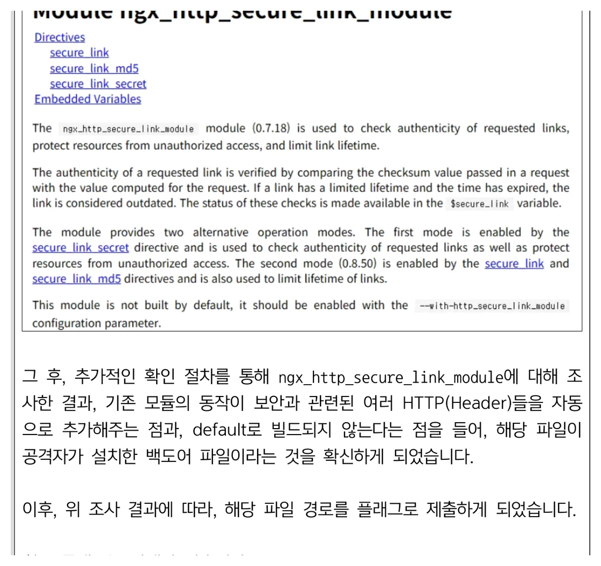
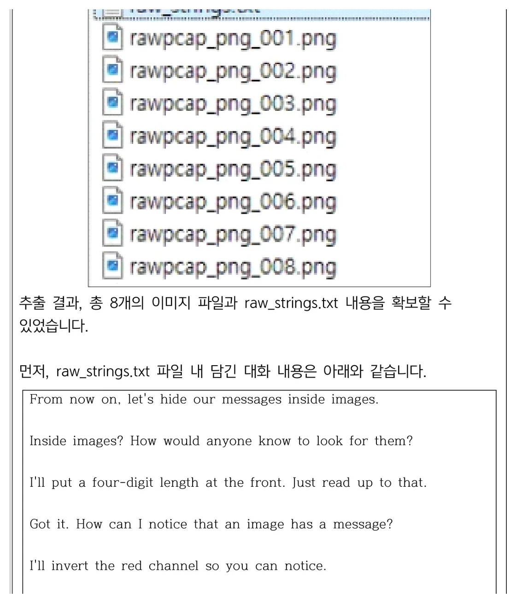

04.04 · Project
금융보안아카데미 2025
사이버 위협 대응·분석 과정 (3기) · 금융보안원
금융권 위협 분석·대응 절차를 학습하고 DFIR 중심 CTF를 수행했습니다.
- 금융권 사이버 위협 대응 절차와 분석 보고 흐름을 학습했습니다.
- DFIR 중심 CTF 문제를 분석하며 사고 원인 추적, 증거 분석, 타임라인 정리, 결과 문서화 과정을 수행했습니다.
- 분석 결과를 발표자료와 보고서 형태로 정리하며 기술적 근거와 결론을 분리해 전달하는 경험을 쌓았습니다.
대표 문제 풀이 — 화이트햇 콘테스트 2025 예선
국방부 주최 화이트햇 콘테스트 예선(2025.10.18, 대학생부 4등·본선 진출)에서 포렌식 파트를 담당했습니다. 아래는 직접 푼 두 문제입니다.
- 시나리오 1-3 · 백도어 경로 특정 — 앞선 시나리오에서 확인된 PyYAML 역직렬화 취약점(CVE-2020-14343)으로 침투가 이뤄졌다는 전제 위에서, 리눅스 디스크 이미지의
log/nginx/access.log를 먼저 봤습니다. 다른 요청과 IP 대역이 다르고curl로 접근한GET /bd한 건이 눈에 띄어 nginx 쪽을 의심했고,/usr/lib/nginx/modules/에서 기본 빌드에 포함되지 않는ngx_http_secure_headers_module.so가 원본보다 크고 수정 시각도 침투 시점과 맞아 백도어로 확정했습니다.

ngx_http_secure_link_module)의 문서와 대조해, 기본 빌드에 없는 모듈이 심어졌음을 확인했습니다.- Leakage Investigation · 유출 경로 추적 — 단일 pcap 을 zeek 으로 먼저 훑어
weird.log의bad_HTTP_request와 문서용 예약 대역(198.51.100.0/24) 통신을 단서로 의심 IP 를 좁혔습니다. Wireshark 로 해당 IP 를 필터링해 "이미지로 메시지를 보내겠다"는 대화와 PNG 8장을 추출했고, 대화에 적힌 규칙(red 채널 반전 · 앞 4자리에 길이 기록)대로 디코딩해 제품명과 날짜를 복원했습니다.

금융보안아카데미 2025 최우수상 (금융보안원장) · 2025.11.07